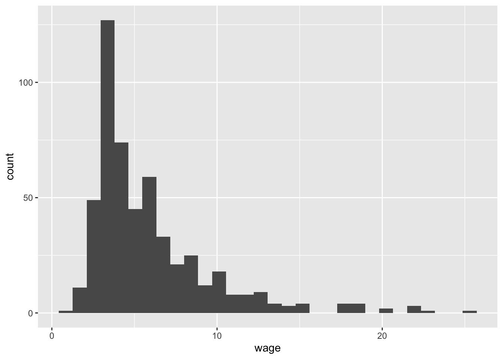

library(tidyverse)10 Descriptive Model Building

10.1 Learning Objectives
- Understand that models don’t know what they’re doing, and it is the role of the data scientist to control and deploy them.
- Practice transforming variables, on the fly, at the time of regression modeling in order to produce an effective, descriptive regression model.
- Appreciate that the random variable understanding of the world that we have constructed is useful for thinking of reshaping, or transforming spaces.
10.2 Class Announcements
- The Regression Lab begins next week.
- Your instructor will divide you into teams.
- As part of the lab, you will perform a statistical analysis using linear regression models.
10.3 Roadmap
Rearview Mirror
Statisticians create a population model to represent the world.
The BLP is a useful way to summarize the relationship between one outcome random variable \(Y\) and input random varibles \(X_1,...,X_k\)
OLS regression is an estimator for the Best Linear Predictor (BLP)
We can capture the sampling uncertainty in an OLS regression with standard errors, and tests for model parameters.
Today
The research goal determines the strategy for building a linear model.
Description means summarizing or representing data in a compact, human-understandable way.
We will capture complex relationships by transforming data, including using indicator variables and interaction terms.
Looking Ahead
We will see how model building for explanation is different from building for description.
The famous Classical Linear Model (CLM) allows us to apply regression to smaller samples.
10.4 Discussion
10.4.1 Three modes of model building
- Recall the three major modes of model building: Prediction, Description, Explanation.
- What is the appropriate mode for each of the following questions?
- What is going on?
- Why is something going on?
- What is going to happen?
- Think of a research question you are interested in. Which mode is it aligned with?
10.4.2 The statistical modeling process in different modes
How does the modeling goal influence each of the following steps in the statistical modeling process?
Choice of variables and transformation
Choice of model (ols regression, neural nets, random forest, etc.)
Model evaluation
10.5 R Activity: Measuring the return to education
- In labor economics, a key concept is returns to education.
- Our goal is description: what is the relationship between education and wages? We will proceed in two steps:
- First, we will discuss what the appropriate specifications are.
- Then we will estimate the different models to answer this question.
- We will use wage1 dataset in the wooldridge package in the following sections.
wage1 <- wooldridge::wage1
#names(wage1)
wage1 |>
ggplot() +
aes(x=wage) +
geom_histogram()`stat_bin()` using `bins = 30`. Pick better value with `binwidth`.
10.5.1 Transformations
10.5.1.1 Applying and Interpreting Logarithms
Which of the following specifications best capture the relationship between education and hourly wage? (Hint: Do a quick a EDA)
- level-level: \(wage = \beta_0 + \beta_1 educ + u\)
- Level-log: \(wage = \beta_0 + \beta_1 \ln(educ) + u\)
- log-level: \(\ln(wage) = \beta_0 + \beta_1 educ + u\)
- log-log: \(\ln(wage) = \beta_0 + \beta_1 \ln(educ) + u\)
What is the interpretation of \(\beta_0\) and \(\beta_1\) in your selected specification?
Can we use \(R^2\) or Adjusted \(R^2\) to choose between level-level or log-level specifications?
Remember
- Doing a log transformation for any reason essentially implies a fundamentally different relationship between outcome (Y) and predictor (X) that we need to capture
10.5.1.2 Applying and Interpreting Polynomials
The following specifications include two control variables: years of experience (exper) and years at current company (tenure).
Do a quick EDA and select the specification that better suits our description goal.
\(wage = \beta_0 + \beta_1 educ + \beta_2 exper + \beta_3 tenure + u\)
\(\begin{aligned} wage &= \beta_0 + \beta_1 educ + \beta_2 exper + \beta_3 exper^2 + \\ & \beta_4 tenure + \beta_5 tenure^2 + u \end{aligned}\)
How do you interpret the \(\beta\) coefficients?
10.5.1.3 Applying and Interpreting Indicator variables and interaction terms
In the following models, first, explain why the indicator variables or interaction terms have been included. Then identify the reference group (if any) and interpret all coefficients.
\(wage = \beta_0 + \beta_1 educ + \beta_2 I(educ \geq 12) + u\)
\(wage = \beta_0 + \beta_1 educ + \beta_2 female + u\)
\(wage = \beta_0 + \beta_1 educ + \beta_2 female + \beta_3 educ*female + u\)
\(\begin{aligned} wage &= \beta_0 + \beta_1 female + \beta_2 I(educ = 2) + \beta_3 I(educ = 3)\\ &...+ \beta_{20} I(educ = 20) + u\\ \end{aligned}\)
10.5.2 Estimation
Estimating Returns to Education
- Answer the following questions using an appropriate hypothesis test.
- Is a year of education associated with changes to hourly wage? (Include experience and tenure without polynomial terms).
- Is the association between wage and experience / wage and tenure non-linear?
- Is there evidence for gender wage discrimination in the U.S.?
- Is there any evidence for a graduation effect on wage?
- Display all estimated models in a regression table, and discuss the robustness of your results.